Intercorso · Lezione 4
Rappresentazione complessa in banda base
Segnali in banda base e passa-banda, segnale analitico, inviluppo complesso, componenti I/Q, up/down-conversion, filtri.
Indice della lezione
- Il modulatore nel sistema
- Modulazione
- Segnali in banda base e in banda passante
- Vantaggi della banda base
- Banda
- Rappresentazione complessa in banda base
- Segnale analitico
- Ritorno al segnale reale e Hilbert in frequenza
- Inviluppo complesso
- Energia dell'inviluppo
- Dimostrazione di (18) — appunti
- Verifica di (19) e (20) — appunti
- Upconversion e downconversion
- Cosa porta l'inviluppo
- Filtraggio passa-banda in banda base
- Banda di un segnale complesso
- Spiegazioni e dimostrazioni passo-passo
- Domande da esame
Il corso, slide per slide
Il modulatore nel sistema
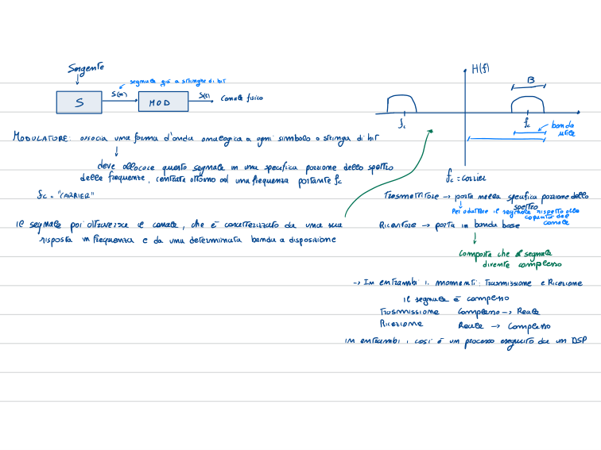
- Sorgente → s(n) → modulatore (MOD) → s(t) → canale fisico. Il modulatore associa una forma d'onda analogica a ogni simbolo o stringa di bit.
- Deve allocare il segnale in una specifica porzione dello spettro, centrata attorno a una frequenza portante f_c (carrier). Il canale è caratterizzato da una risposta in frequenza H(f) e da una determinata banda a disposizione (disegno: due lobi di larghezza B attorno a \pm f_c).
- Il trasmettitore porta il segnale nella porzione di spettro prevista, per adattarlo alla capacità del canale; il ricevitore lo riporta in banda base, e questo comporta che il segnale diventa complesso.
- In entrambi i momenti, trasmissione e ricezione, c'è un passaggio complesso ↔ reale (trasmissione: complesso → reale; ricezione: reale → complesso), eseguito da un DSP.
Modulazione
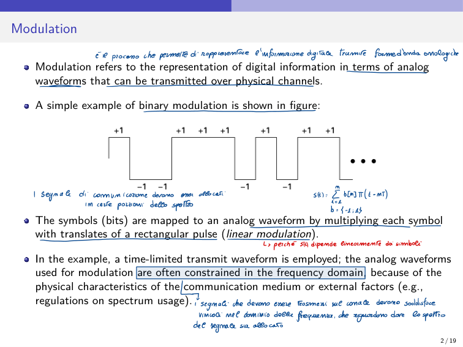
- La modulazione è la rappresentazione dell'informazione digitale con forme d'onda analogiche trasmissibili su canali fisici.
- Esempio di modulazione binaria: i simboli (bit) sono mappati su una forma d'onda moltiplicando ciascun simbolo per traslate di un impulso rettangolare (modulazione lineare; nota: «perché s(t) dipende linearmente dai simboli»):
(figura: sequenza +1,-1,-1,+1,+1,+1,-1,+1,-1,+1,+1,\dots). Gli appunti scrivono la somma con l'indice sbagliato: va letta sull'indice m dei simboli.
- Nell'esempio la forma d'onda è limitata nel tempo; le forme d'onda usate per modulare sono spesso vincolate nel dominio della frequenza, per le caratteristiche fisiche del mezzo o per fattori esterni (es. regole sull'uso dello spettro). Nota: i segnali da trasmettere devono soddisfare vincoli nel dominio della frequenza, che riguardano dove è allocato il loro spettro.
Segnali in banda base e in banda passante
- Un segnale s_b(t) è in banda base se, per qualche B>0,
Un canale LTI è in banda base se la sua H(f) soddisfa la (1).
- Un segnale s_p(t) è in banda passante se
con f_c>B>0 detta frequenza portante (carrier). Un canale LTI è passa-banda se H(f) soddisfa la (2). Nota: si dice banda passante perché il contenuto informativo è traslato e centrato attorno a f_c.
- Sia s_b(t) che s_p(t) reali, con trasformate (in senso ordinario o generalizzato) S_b(f), S_p(f): per la simmetria coniugata S_b(f)=S_b^\ast(-f) e S_p(f)=S_p^\ast(-f) (le trasformate dei segnali reali godono della simmetria hermitiana).
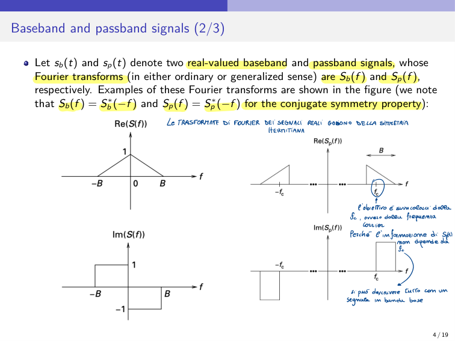
A sinistra il segnale in banda base: \text{Re}\,S(f) è un triangolo di altezza 1 su (-B,B) (pari), \text{Im}\,S(f) vale +1 su (-B,0) e -1 su (0,B) (dispari). A destra il passa-banda: stesse forme attorno a \pm f_c, larghe B. Nota (con f_c cerchiato): l'obiettivo è svincolarsi da f_c, perché l'informazione di s(t) non dipende da f_c e si può descrivere tutto con un segnale in banda base.
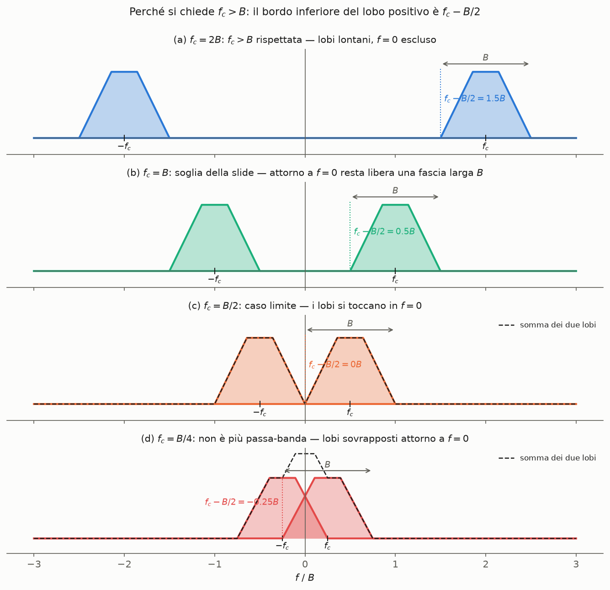
Figura di supporto: perché f_c>B. Il bordo inferiore del lobo positivo è f_c-B/2>B/2>0, quindi i due lobi non si toccano e non contengono f=0. (a) f_c=2B, (b) f_c=B (soglia), (c) f_c=B/2: i lobi si toccano in 0, (d) f_c=B/4: si sovrappongono e lo spettro diventa di banda base.
Vantaggi della banda base
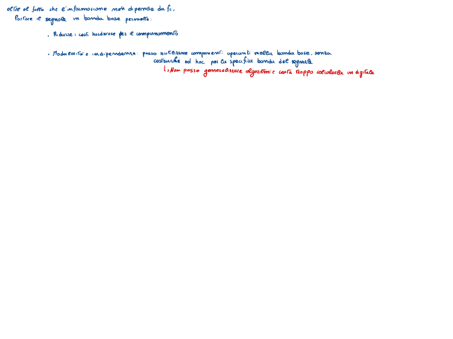
Portare il segnale in banda base permette di:
- ridurre i costi hardware per il campionamento;
- guadagnare modularità e indipendenza: si riutilizzano componenti che operano in banda base, senza costruirli ad hoc per la specifica banda del segnale;
- (in rosso) altrimenti non si potrebbero generalizzare gli algoritmi, e calcolarli in digitale costerebbe troppo.
Banda
- Banda = ampiezza dell'intervallo di frequenze occupato dalla trasformata di Fourier. Banda monolatera (one-sided): occupazione spettrale sulle frequenze positive; bilatera (two-sided): su frequenze positive e negative. Per un segnale reale la bilatera è il doppio della monolatera, per la simmetria coniugata X(f)=X^\ast(-f). Di solito «banda» indica la monolatera.
- Un segnale passa-banda è a banda stretta (narrowband) se B/f_c\ll1 (nota: non è un'ipotesi stringente). Da qui in poi si trattano solo segnali passa-banda a banda stretta.
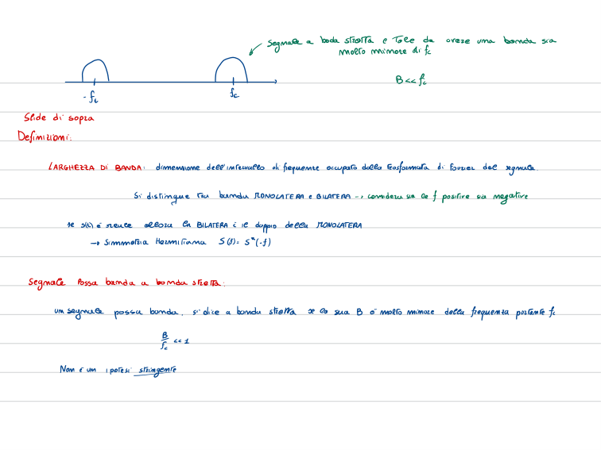
Rappresentazione complessa in banda base
-
I canali passa-banda sono molto usati: bisogna saper trasmettere e ricevere segnali passa-banda.
-
Tutta l'informazione di un segnale passa-banda reale è contenuta in un corrispondente segnale complesso in banda base, detto rappresentazione complessa in banda base o inviluppo complesso.
-
L'inviluppo si può rappresentare a tempo discreto con una frequenza di campionamento molto più piccola di quella del segnale passa-banda s_p(t) (nota: «il vantaggio»). Perciò i transceiver moderni implementano algoritmi complessi in digitale (DSP), direttamente sui segnali complessi in banda base, riducendo al minimo l'elaborazione analogica. (Ordini di grandezza: per s_p serve f_s\ge2f_c+B, per l'inviluppo f_s\ge B.)
-
Schema modulare del transceiver:
- un DSP codifica l'informazione nella forma d'onda complessa in banda base (codifica, modulazione, filtraggio);
- la forma d'onda in banda base è convertita in su (upconverted) nel segnale passa-banda da inviare sul canale fisico;
- il segnale passa-banda ricevuto è convertito in giù (downconverted) in banda base;
- il DSP opera sul segnale in banda base per sincronizzazione, demodulazione e decodifica.
Così algoritmi sofisticati si sviluppano in banda base, indipendentemente dalla banda fisica usata.
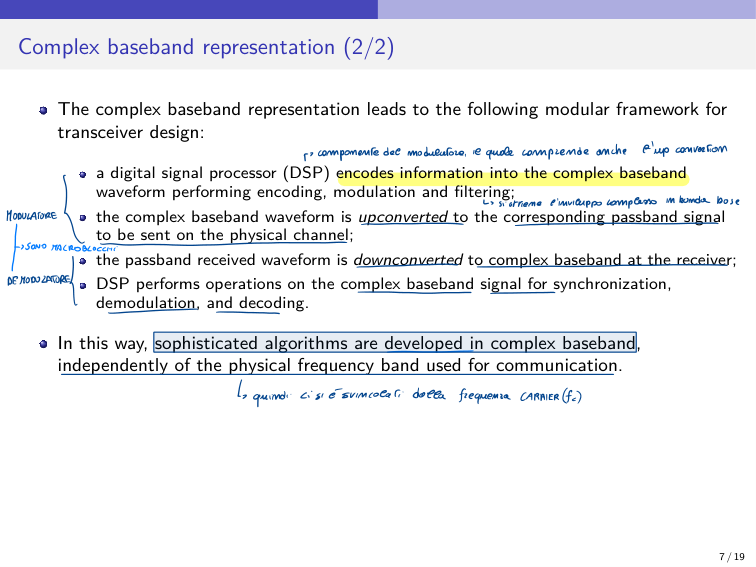
Note a mano: i punti 1–2 formano il modulatore e i punti 3–4 il demodulatore («macroblocchi»); il modulatore comprende anche l'upconversion; dal punto 1 si ottiene l'inviluppo complesso in banda base; ci si è svincolati dalla frequenza carrier f_c.
Segnale analitico
Per definire l'inviluppo si costruisce prima il segnale analitico associato a s_p(t) (con trasformata S_p(f)):
con u(\cdot) gradino unitario: si annullano le frequenze negative (ridondanti) e si moltiplica per \sqrt2, fattore «introdotto per motivi energetici» (conserva l'energia: la parte tenuta ha metà dell'energia, e il \sqrt2 la ripristina). A ogni segnale passa-banda corrisponde un unico segnale analitico, e viceversa. Nel tempo:
Dalla (5) e (6), con la proprietà di riflessione:
Sostituendo la (7) nella (4):
dove
è la trasformata di Hilbert di s_p(t). La (8) dice che il segnale analitico è un segnale complesso: parte reale = il segnale passa-banda originale scalato; parte immaginaria = la sua trasformata di Hilbert scalata.
Ritorno al segnale reale e Hilbert in frequenza
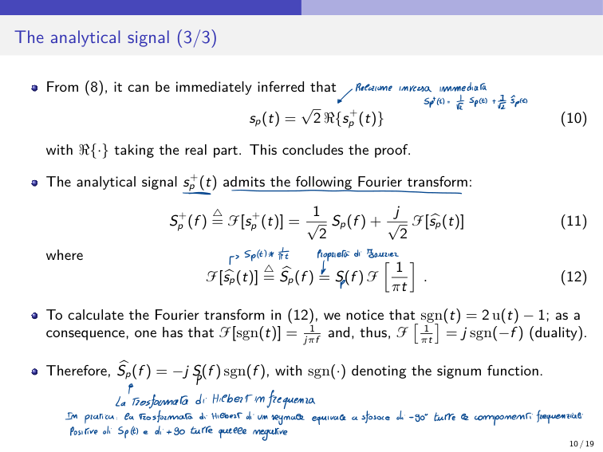
Dalla (8) si deduce immediatamente (relazione inversa) e questo conclude la dimostrazione della corrispondenza biunivoca:
Trasformata del segnale analitico:
Per calcolare la (12): \text{sgn}(t)=2u(t)-1, quindi (appunti, con la (5))
e per dualità \mathcal F\big[\frac1{\pi t}\big]=j\,\text{sgn}(-f)=-j\,\text{sgn}(f). Perciò
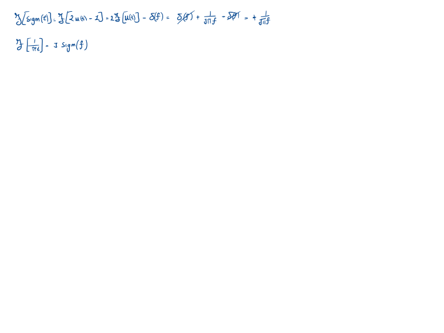
Appunti. Nell'ultima riga manca un meno (j\,\text{sign}(f) invece di -j\,\text{sgn}(f)); la slide ha il segno giusto.
Interpretazione (nota a mano): la trasformata di Hilbert equivale a sfasare di -90° tutte le componenti frequenziali positive e di +90° quelle negative. (Refuso della slide, corretto a mano: nella (12) e nell'ultima formula va S_p(f), non S(f).)
Inviluppo complesso
L'inviluppo complesso è il segnale analitico traslato in banda base:
Viceversa, dato l'inviluppo in frequenza (relazione inversa; la parte tagliata dal gradino viene rimessa dal termine coniugato):
(dimostrazione dalla (16): s_p=\frac{\sqrt2}2[s\,e^{j2\pi f_ct}+s^\ast e^{-j2\pi f_ct}] e traslazioni in frequenza.)
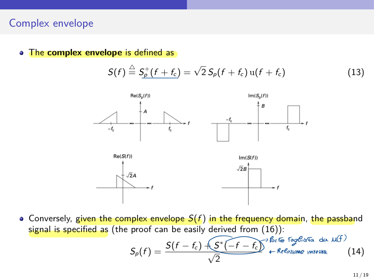
In alto S_p(f): \text{Re} con due triangoli di altezza A attorno a \pm f_c, \text{Im} con due rettangoli di altezza B (positivo in f_c, negativo in -f_c; qui A, B sono altezze, non la banda). In basso l'inviluppo: resta solo il lobo positivo, spostato attorno a 0 e moltiplicato per \sqrt2 (altezze \sqrt2A, \sqrt2B).
Nel tempo, per la proprietà di traslazione di Fourier (nota: «corrisponde a una traslazione del segnale analitico»):
s_c(t) = componente in fase (I), s_s(t) = componente in quadratura (Q): segnali reali. Per ottenere s_p dall'inviluppo (s_p^+=s\,e^{j2\pi f_ct}=[s_c+js_s]e^{j2\pi f_ct}), valida per qualunque segnale passa-banda:
(«in termini di seno e coseno»; il - viene da \text{Re}\{(s_c+js_s)(\cos\alpha+j\sin\alpha)\}=s_c\cos\alpha-s_s\sin\alpha, con \alpha=2\pi f_ct.) Nota: «quadratura» indica che il prodotto scalare con s_c è nullo (eq. (18)).
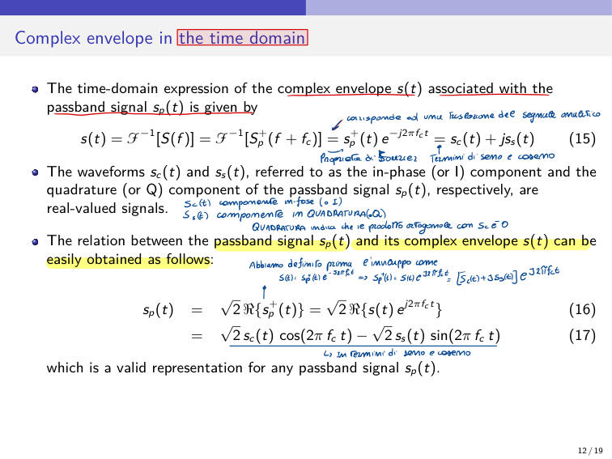
Energia dell'inviluppo
Le forme d'onda passa-banda delle componenti I e Q, x_c(t)=\sqrt2\,s_c(t)\cos(2\pi f_ct) e x_s(t)=\sqrt2\,s_s(t)\sin(2\pi f_ct), sono ortogonali:
Per segnali passa-banda reali u_p, v_p con inviluppi u, v:
Con u=v=s l'energia dell'inviluppo è uguale a quella del segnale passa-banda:
(l'energia è reale, quindi si toglie \text{Re}). In componenti, \lVert s_p\rVert^2=\lVert s_c\rVert^2+\lVert s_s\rVert^2.
Dimostrazione di (18) — appunti
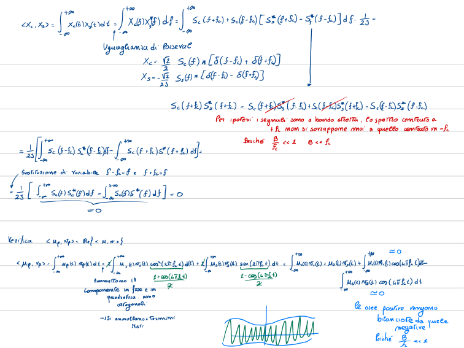
Con Parseval, X_c(f)=\frac1{\sqrt2}[S_c(f-f_c)+S_c(f+f_c)] e X_s(f)=\frac1{j\sqrt2}[S_s(f-f_c)-S_s(f+f_c)]:
Dei quattro termini del prodotto, i due misti S_c(f\mp f_c)S_s^\ast(f\pm f_c) sono nulli: per ipotesi i segnali sono a banda stretta (B/f_c\ll1), e lo spettro centrato in +f_c non si sovrappone mai a quello in -f_c. Restano, con il cambio di variabile \nu=f\pm f_c,
Verifica di (19) e (20) — appunti
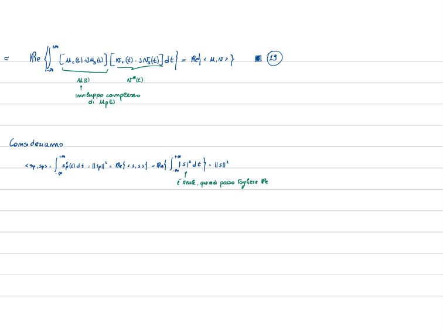
Si sviluppa \langle u_p,v_p\rangle con la (17). I termini misti si annullano per l'ortogonalità (18); restano 2\int u_cv_c\cos^2(2\pi f_ct) e 2\int u_sv_s\sin^2(2\pi f_ct), che con \cos^2=\frac{1+\cos(4\pi f_ct)}2, \sin^2=\frac{1-\cos(4\pi f_ct)}2 danno \int u_cv_c+\int u_sv_s più integrali in \cos(4\pi f_ct) che valgono circa 0 («le aree positive vengono bilanciate da quelle negative, poiché B/f_c\ll1»). Infine \text{Re}\{\int[u_c+ju_s][v_c-jv_s]\,dt\}=\text{Re}\{\langle u,v\rangle\}, cioè la (19); la (20) segue con u=v=s.
(Nelle note della la somma x_c+x_s andrebbe scritta x_c-x_s, per il segno della (17); per l'ortogonalità non cambia nulla.)
Upconversion e downconversion
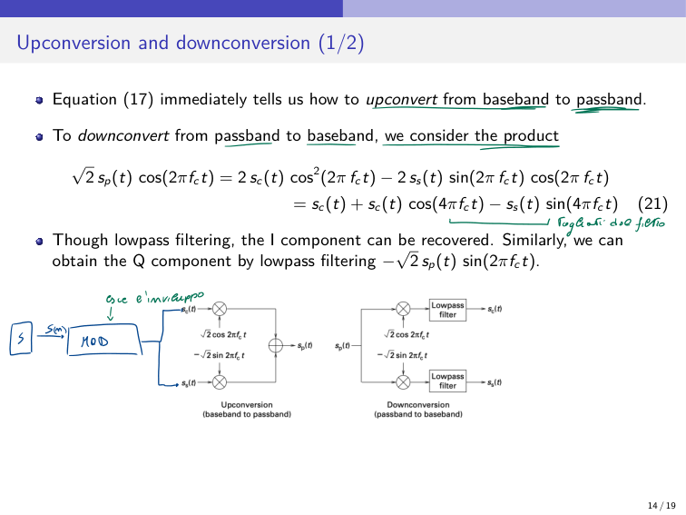
- Upconversion (banda base → banda passante): la (17) dice «immediatamente» come farla. s_c è moltiplicato per \sqrt2\cos(2\pi f_ct), s_s per -\sqrt2\sin(2\pi f_ct) e i due rami si sommano.
- Downconversion (banda passante → banda base): si considera il prodotto
Con un filtro passa-basso (i due termini a 2f_c sono «tagliati dal filtro») si recupera la componente I. Analogamente la componente Q si ottiene filtrando passa-basso -\sqrt2\,s_p(t)\sin(2\pi f_ct): infatti -\sqrt2s_p\sin\alpha=s_s-s_s\cos2\alpha-s_c\sin2\alpha.
- Note a mano: S → s(n) → MOD → (s_c, s_s); «dal modulatore esce l'inviluppo».
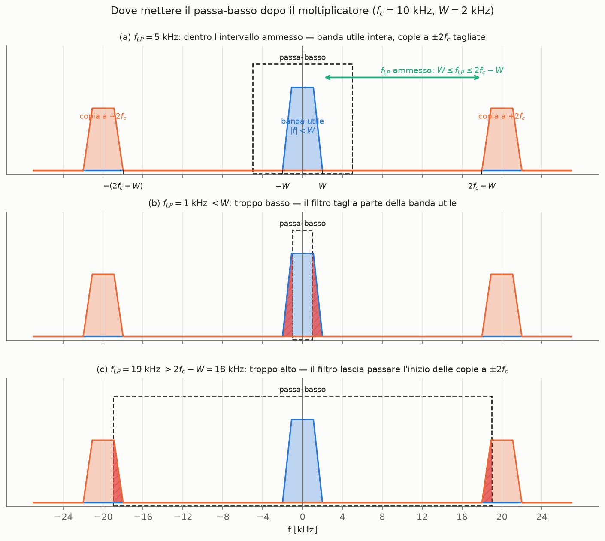
Figura di supporto: posizione in banda del requisito sul passa-basso. Dopo il moltiplicatore la banda utile occupa \lvert f\rvert<W (W = banda di s_c, s_s) e le copie occupano \lvert f\mp2f_c\rvert<W; il taglio f_{LP} deve stare in W\le f_{LP}\le2f_c-W ((a) corretto; (b) f_{LP}<W taglia il segnale; (c) f_{LP}>2f_c-W lascia passare le copie).
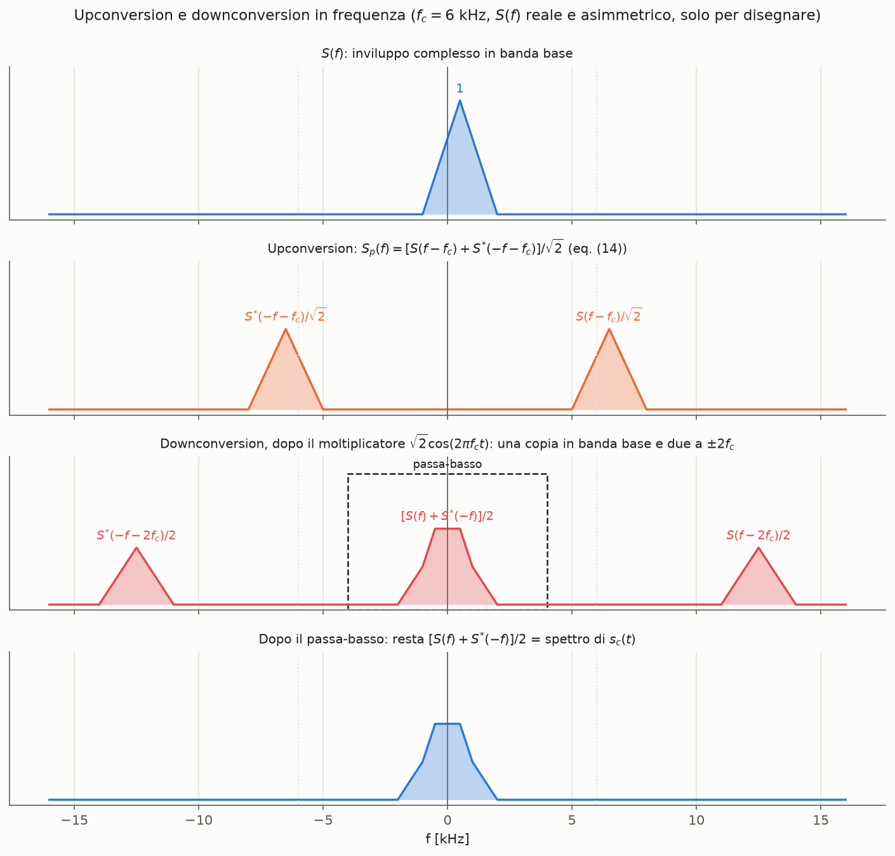
Figura di supporto: up/down in frequenza con un S(f) asimmetrico (quindi s(t) complesso). Upconversion = (14); downconversion = tre copie (\pm2f_c e una in banda base), il passa-basso lascia solo [S(f)+S^\ast(-f)]/2, trasformata di \text{Re}\{s\}=s_c.
Catena unica: S → MOD → upconverter → canale fisico → downconverter → DEMOD → utente. I tre blocchi centrali sono modellati come un unico canale. «Con tutti i passaggi fatti si conserva l'energia?» — «Sì, per le accortezze fatte (\sqrt2).»
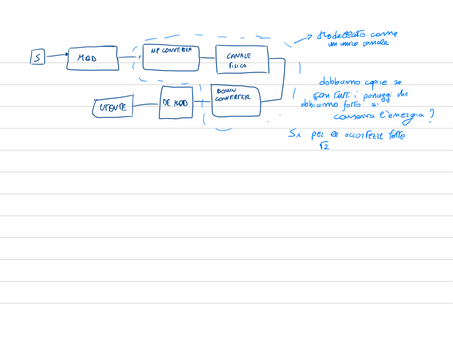
Cosa porta l'inviluppo
La rappresentazione complessa in banda base corrisponde a ricavare le variazioni «lente» di ampiezza e fase indotte dalla modulazione in banda base, eliminando la rapida variazione di fase prevedibile dovuta alla portante f_c. Poiché quella variazione è prevedibile, non porta informazione: l'informazione di un segnale passa-banda è interamente contenuta nel suo inviluppo complesso. Nota: l'inviluppo permette di separare le variazioni lente dovute alla modulazione. (Forma ampiezza-fase: con s=a\,e^{j\theta}, s_p=\sqrt2\,a(t)\cos(2\pi f_ct+\theta(t)).)
Filtraggio passa-banda in banda base
Qualunque filtro passa-banda si può realizzare in banda base complessa. Sia y_p(t)=s_p(t)\ast h_p(t) l'uscita di un filtro passa-banda di risposta impulsiva h_p(t); siano s(t), h(t), y(t) gli inviluppi complessi di s_p, h_p, y_p rispetto a un riferimento di frequenza comune f_c, e S, H, Y le loro trasformate. In frequenza Y_p(f)=S_p(f)H_p(f); sui segmenti a frequenze positive Y_p^+=\sqrt2Y_pu, S_p^+=\sqrt2S_pu, H_p^+=\sqrt2H_pu.
Catena:
Nel tempo (prodotto → convoluzione):
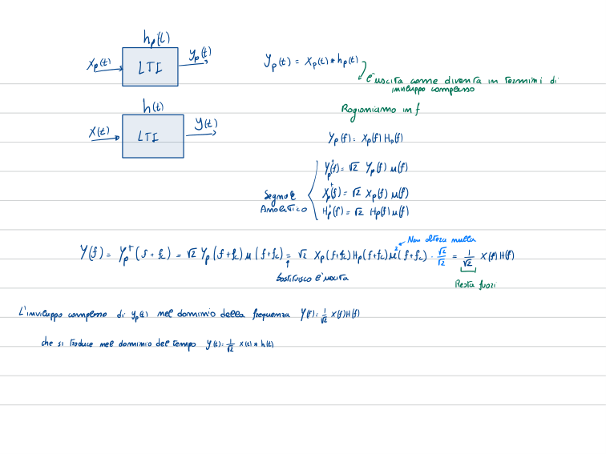
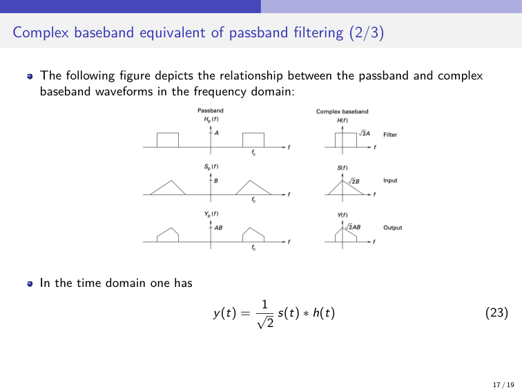
A sinistra, in banda passante: H_p(f) rettangoli di altezza A attorno a \pm f_c, S_p(f) triangoli di altezza B, Y_p(f) di altezza AB. A destra, in banda base: H di altezza \sqrt2A, S di altezza \sqrt2B, Y di altezza \sqrt2AB (coerente con la (22)).
In termini di componenti I e Q (s=s_c+js_s, h=h_c+jh_s, la convoluzione si sviluppa come un prodotto):
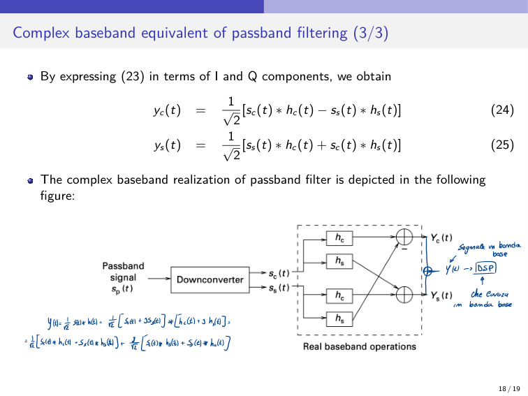
Realizzazione in banda base: s_p entra nel downconverter che produce s_c, s_s; il riquadro «operazioni reali in banda base» contiene quattro filtri reali (h_c, h_s per ciascuna componente) e due sommatori (y_c con il meno); le uscite formano y(t)=y_c+jy_s, «segnale in banda base», che va a un DSP in banda base. (Nella figura manca il fattore 1/\sqrt2, presente nella nota a mano.)
Banda di un segnale complesso
L'occupazione spettrale di un segnale fisico a valori reali è la più piccola banda di frequenze positive che ne contiene la maggior parte (S(-f)=S^\ast(f)). Per i segnali complessi in banda base l'informazione sta sia nelle frequenze positive sia in quelle negative: l'occupazione spettrale è la più piccola banda attorno all'origine che contiene la maggior parte del segnale (frequenze positive e negative).
Spiegazioni e dimostrazioni passo-passo
Apri una voce per leggere la spiegazione in parole semplici e le dimostrazioni svolte riga per riga (🧩 = passaggio ricostruito da me).
Modulazione digitale
Spiegazione
L'esempio della slide: modulazione lineare binaria
La sequenza di simboli +1, −1, −1, +1, +1, +1, −1, +1, −1, +1, +1, … diventa una forma d'onda a gradini: ogni simbolo moltiplica un impulso rettangolare traslato. Nota a mano sotto la figura: i segnali di comunicazione devono essere allocati in certe porzioni dello spettro.
- I simboli (bit) diventano una forma d'onda analogica moltiplicando ogni simbolo per una copia traslata di un impulso rettangolare: è la modulazione lineare. Nota a mano: si chiama così «perché s(t) dipende linearmente dai simboli».
- La forma d'onda dell'esempio è limitata nel tempo. Le forme d'onda usate davvero per modulare, però, sono spesso vincolate nel dominio della frequenza:
- per le caratteristiche fisiche del mezzo di comunicazione;
- per fattori esterni, per esempio le regole sull'uso dello spettro.
- Note a mano: i segnali di comunicazione devono essere allocati in certe porzioni dello spettro. I segnali da trasmettere sul canale devono soddisfare vincoli nel dominio della frequenza, che riguardano dove è allocato il loro spettro.
🧩 Cosa vuol dire "dipende linearmente": moltiplicare tutti i b[m] per una costante moltiplica s(t) per la stessa costante, e la forma d'onda di una somma di sequenze di simboli è la somma delle forme d'onda.
Dove deve finire il segnale modulato
Il canale del disegno lascia passare solo le frequenze attorno a \pm f_c: il segnale trasmesso deve quindi essere in banda passante (segnali banda base e passa banda). Nello schema modulare della lezione:
- il DSP del trasmettitore esegue codifica, modulazione e filtraggio in banda base, producendo l'inviluppo complesso;
- l'upconverter lo porta in banda passante (upconversion e downconversion).
Note a mano:
- il modulatore è il macroblocco che comprende entrambi i passi, cioè il DSP e anche l'upconversion;
- il demodulatore è il macroblocco speculare: downconversion e DSP.
Nella figura una nota a mano collega S → s(n) → MOD alle due uscite s_c(t) e s_s(t) che entrano nell'upconverter. Dal modulatore «esce l'inviluppo».
Perché importa
La modulazione digitale è il terzo tema del programma. In questa lezione fa da motivazione: il modulatore deve produrre forme d'onda che stiano in una precisa porzione di spettro, e per descriverle e generarle serve la rappresentazione complessa in banda base.
Dimostrazioni passo-passo
Derivazione — Spettro dell'impulso rettangolare
🧩 Derivazione mia. Impulso p(t) = 1 per |t| < T/2, 0 altrove.
Risultato: |P(f)| si annulla solo nei punti f = k/T (k \neq 0) e tra uno zero e l'altro decresce solo come 1/(\pi|f|): non esiste una B oltre la quale P(f) = 0. L'impulso rettangolare, limitato nel tempo, non è a banda limitata. Sanity check: P(0) = T, cioè l'area dell'impulso ✓. È lo stesso fatto: un segnale di durata finita non può avere banda rigorosamente limitata (aliasing). Ipotesi: impulso rettangolare ideale (fronti verticali).
Segnali in banda base e in banda passante
Spiegazione
Esempi di spettri
La slide considera due segnali reali, s_b(t) in banda base e s_p(t) in banda passante. Le loro trasformate S_b(f) e S_p(f) possono esistere in senso ordinario o in senso generalizzato, per esempio con delta di Dirac. Per la simmetria coniugata S_b(f) = S_b^\ast (-f) e S_p(f) = S_p^\ast (-f).
- A sinistra, il segnale in banda base. \text{Re}(S(f)) è un triangolo di altezza 1 su (-B, B), pari. \text{Im}(S(f)) vale +1 su (-B, 0) e -1 su (0, B), dispari.
- A destra, il segnale passa-banda: stesse forme spostate attorno a \pm f_c, larghezza B; parte reale pari, parte immaginaria dispari.
- Note a mano: «le trasformate di Fourier dei segnali reali godono della simmetria hermitiana». Con f_c cerchiato: «l'obiettivo è svincolarsi dalla f_c, ovvero dalla frequenza carrier, perché l'informazione di s(t) non dipende da f_c: si può descrivere tutto con un segnale in banda base».
💡 Connessione: "svincolarsi da f_c" è il programma della lezione. L'informazione di s_p(t) non dipende da f_c, quindi si può descrivere tutto con un segnale in banda base: l'inviluppo complesso.
⚠️ Nella figura il segnale in banda base è indicato con S(f) invece di S_b(f). Più avanti, S(f) indica l'inviluppo complesso.
Banda
- La banda è l'ampiezza dell'intervallo di frequenze occupato dalla trasformata di Fourier.
- Banda monolatera (one-sided): occupazione spettrale sulle frequenze positive.
- Banda bilatera (two-sided): occupazione su frequenze positive e negative.
- Per i segnali reali la bilatera è il doppio della monolatera, per la simmetria coniugata X(f) = X^\ast (-f).
- Di solito "banda" senza aggettivi indica la monolatera.
- Un segnale passa-banda è a banda stretta (narrowband) se B/f_c \ll 1. Da qui in poi si considerano solo segnali passa-banda a banda stretta.
🧩 Con gli spettri: il segnale in banda base ha banda monolatera B e bilatera 2B. Il passa-banda ha banda monolatera B (il lobo positivo) e bilatera 2B (i due lobi).
Definizioni negli appunti e banda stretta
Gli appunti riprendono in italiano le definizioni:
- larghezza di banda: dimensione dell'intervallo di frequenze occupato dalla trasformata di Fourier del segnale;
- si distingue tra banda monolatera e bilatera; la bilatera considera sia le frequenze positive sia quelle negative;
- se s(t) è reale, la bilatera è il doppio della monolatera, per la simmetria hermitiana S(f) = S^\ast (-f);
- segnale passa-banda a banda stretta: la sua banda B è molto minore della frequenza portante, B/f_c \ll 1. Nota: non è un'ipotesi stringente.
Appunti a mano: un segnale a banda stretta ha banda molto minore di f_c (B \ll f_c), cioè due lobi stretti attorno a \pm f_c. Sotto, le definizioni di larghezza di banda, banda monolatera e bilatera e segnale a banda stretta.
🧩 Perché "non è un'ipotesi stringente" (lettura mia): nei sistemi reali la portante è molto più alta della banda del segnale. È lo stesso ordine di grandezza del grafico I/Q di inviluppo complesso, dove per rendere visibili le oscillazioni si è dovuta scegliere una f_c artificialmente bassa.
🧩 Perché l'ipotesi di banda stretta aiuta, anticipando i risultati della lezione:
- s_p(t) appare come una portante a f_c con ampiezza e fase che cambiano lentamente (inviluppo complesso);
- nella downconversion i termini a 2f_c cadono lontanissimi dalla banda base e si filtrano con facilità (upconversion e downconversion).
Canale passa-banda
Il disegno (modulazione digitale) mostra la H(f) di un canale passa-banda: due lobi di larghezza B, la "banda utile", centrati in \pm f_c.
- Il segnale attraversa il canale, che è caratterizzato da una sua risposta in frequenza e da una determinata banda a disposizione.
- Il trasmettitore deve portare il segnale in quella porzione di spettro, per adattarlo al canale.
- Il ricevitore lo riporta in banda base, «e questo rende il segnale complesso» (inviluppo complesso).
🎯 Esame: dare le definizioni (1) e (2), spiegare banda monolatera e bilatera e perché per i segnali reali una è il doppio dell'altra, definire la banda stretta.
Perché importa
I canali passa-banda sono molto usati, quindi bisogna saper trasmettere e ricevere segnali passa-banda. Le definizioni fissano la notazione (B, f_c) di tutta la lezione. L'ipotesi di banda stretta è usata in tutti i risultati successivi.
Dimostrazioni passo-passo
Derivazione — Simmetria hermitiana di un segnale reale
🧩 Derivazione mia
Conseguenze, scrivendo X(-f) = X^\ast (f) per parte reale e parte immaginaria:
- \text{Re}\,X(-f) = \text{Re}\,X(f): la parte reale è pari;
- \text{Im}\,X(-f) = -\text{Im}\,X(f): la parte immaginaria è dispari;
- |X(-f)| = |X(f)|: il modulo è pari.
È quello che mostra la figura. La metà a frequenze negative è l'immagine speculare (coniugata) di quella positiva: non contiene informazione nuova. È l'osservazione da cui nasce il segnale analitico.
Derivazione — La banda bilatera è il doppio della monolatera
🧩 Derivazione mia
Se le frequenze positive occupate formano un insieme di ampiezza B, per |X(-f)| = |X(f)| le frequenze negative occupate ne sono lo specchio, e hanno ampiezza B anch'esse. In totale: 2B. Caso limite: per un segnale complesso la simmetria non vale e le due metà sono indipendenti, quindi la regola del "doppio" non si applica (banda dei segnali complessi: inviluppo complesso).
Derivazione — Perché si chiede f_c > B
🧩 Derivazione mia: cosa succederebbe altrimenti.
Il bordo inferiore del lobo positivo sta sopra B/2 > 0, e per simmetria il bordo superiore del lobo negativo sta sotto -B/2. I due lobi quindi non si toccano e non contengono f = 0. Senza questa condizione, "passa-banda" non avrebbe senso.
🧩 Grafico mio (script output/grafici/genera_grafico_condizione_passabanda.py): stessi due lobi larghi B in \pm f_c, con la portante sempre più bassa. La riga tratteggiata colorata segna il bordo inferiore del lobo positivo, f_c - B/2.
- (a) f_c = 2B: bordo a 1.5B, i lobi sono lontanissimi dall'origine.
- (b) f_c = B, la soglia della slide: bordo a B/2. Attorno a f = 0 resta libera una fascia larga B, da -B/2 a B/2.
- (c) f_c = B/2: bordo a 0, i due lobi si toccano proprio in f = 0. È il limite oltre il quale smettono di essere separati.
- (d) f_c = B/4: bordo a -0.25B. I lobi si sovrappongono attorno all'origine, e la loro somma (tratteggiata nera) ha contenuto anche in f = 0: è uno spettro in banda base, non più un segnale passa-banda.
🧩 Osservazione mia: per tenere separati i lobi basterebbe f_c > B/2, cioè il caso (c) escluso. La slide chiede di più, f_c > B, e quindi lascia sempre libera attorno all'origine almeno una fascia larga B, come nel caso (b).
Segnale analitico e trasformata di Hilbert
Spiegazione
Esempio: il segnale analitico di un coseno
🧩 Esempio mio: applica le formule della slide al segnale passa-banda più semplice, s_p(t) = \cos(2\pi f_0 t) con f_0 > 0.
Si legge tutto:
- la trasformata di Hilbert trasforma il coseno nel seno, cioè lo sfasa di 90°;
- il segnale analitico è un esponenziale complesso, un vettore che ruota. Ha una sola riga, a +f_0: è proprio lo spettro di s_p senza la parte negativa, come vuole la (3);
- \sqrt2\,\text{Re}\{s_p^+\} = \text{Re}\{e^{j2\pi f_0 t}\} = \cos(2\pi f_0 t) ✓, eq. (10);
- energia: la riga di s_p^+ ha modulo 1/\sqrt2, quelle di s_p hanno modulo 1/2. Vale (1/\sqrt2)^2 = 1/2 = (1/2)^2 + (1/2)^2: la potenza è la stessa ✓.
La trasformata di Hilbert come sfasatore di 90°
📄 Fonte: nota a mano su: «in pratica la trasformata di Hilbert di un segnale equivale a sfasare di −90° tutte le componenti frequenziali positive e di +90° tutte quelle negative».
con le note a mano: relazione inversa (10), proprietà di Fourier nella (12), trasformata di Hilbert in frequenza e sfasamento di ∓90°.
🧩 Perché, in termini di filtro (lettura mia): il trasformatore di Hilbert è un sistema LTI con risposta in frequenza H_{\mathcal{H}}(f) = -j\,\text{sgn}(f) e risposta impulsiva 1/(\pi t).
- |H_{\mathcal{H}}(f)| = 1: non cambia l'ampiezza di nessuna componente.
- Per f > 0 moltiplica per -j = e^{-j\pi/2}, cioè fase -90°; per f < 0 moltiplica per +j = e^{+j\pi/2}, cioè +90°. È lo sfasamento della nota, verificato sul coseno qui sopra.
Il segnale analitico (8) è quindi il segnale di partenza più j volte la sua versione sfasata di 90°, a meno del fattore 1/\sqrt2. La somma cancella le frequenze negative e raddoppia le positive.
🎯 Esame: definire il segnale analitico (3); ricavarne l'espressione nel tempo (8) passando per la (7); dimostrare la (10) e la biunivocità; ricavare \widehat{S}_p(f) = -j\,\text{sgn}(f)\,S_p(f); spiegare il ruolo del \sqrt2.
Perché importa
È il passo intermedio verso l'inviluppo complesso. Scartare le frequenze negative non perde nulla, perché sono ridondanti per un segnale reale. Dopo lo scarto resta un solo lobo, attorno a +f_c, che si può traslare in banda base (eq. (13)).
Dimostrazioni passo-passo
Derivazione — Eq. (4): dal prodotto in frequenza alla convoluzione nel tempo
Lo stesso passaggio è annotato a mano sopra la (4): \sqrt2\,\mathcal{F}^{-1}[S_p(f)] \ast \mathcal{F}^{-1}[u(f)]. Resta da calcolare l'antitrasformata del gradino in frequenza, che la nota a mano sulla (7) chiama appunto «antitrasformata del gradino».
Derivazione — Eq. (7): antitrasformata di u(f)
🧩 Derivazione mia dei passaggi
Derivazione — Eq. (8): il segnale analitico nel tempo
Note a mano: s_p(t) è il «segnale reale passa-banda», \widehat{s}_p(t) è la «trasformata di Hilbert di s_p».
Derivazione — Eq. (10) e corrispondenza biunivoca
🧩 Derivazione mia dei passaggi
Cosa è stato dimostrato, cioè l'affermazione: da s_p si calcola s_p^+ con la (8), e da s_p^+ si torna a s_p con la (10). La corrispondenza è quindi biunivoca: il segnale analitico contiene tutta l'informazione di s_p.
🧩 Perché basta la parte reale: la parte negativa dello spettro scartata nella (3) si ricostruisce prendendo la parte reale, proprio perché per un segnale reale è lo specchio coniugato di quella positiva (segnali banda base e passa banda).
Derivazione — Trasformata di \text{sgn}(t) e di 1/(\pi t)
📄 I primi tre passaggi sono quelli degli appunti; 🧩 gli ultimi due, con la dualità, sono miei.
Appunti a mano: \mathcal{F}[\text{sign}(t)] = \mathcal{F}[2u(t) - 1] = 2\mathcal{F}[u(t)] - \delta(f) = \delta(f) + \frac{1}{j\pi f} - \delta(f) = \frac{1}{j\pi f} (le due delta barrate si cancellano). Sotto, \mathcal{F}[1/(\pi t)].
⚠️ Negli appunti l'ultima riga è \mathcal{F}[1/(\pi t)] = j\,\text{sign}(f): manca il meno. La slide scrive j\,\text{sgn}(-f), cioè -j\,\text{sgn}(f), ed è il segno giusto. È quello che dà \widehat{S}_p = -j\,\text{sgn}(f)\,S_p e che fa tornare il controllo con la (3) qui sotto: con +j si cancellerebbero le frequenze positive invece delle negative.
Derivazione — Trasformata di Hilbert in frequenza, eq. (12)
Note a mano: sopra \widehat{S}_p «s_p(t) \ast \frac{1}{\pi t}», sul segno di uguale «proprietà di Fourier» (convoluzione → prodotto), sotto il risultato «la trasformata di Hilbert in frequenza».
⚠️ Refuso della slide, corretto a mano: nella (12) e nell'ultima formula compare S(f) invece di S_p(f). Qui S(f) sarebbe l'inviluppo complesso, un'altra cosa.
Derivazione — Controllo: dalla (11) si ritrova la (3)
🧩 Verifica mia: le due strade, frequenza (3) e tempo (8), devono dare lo stesso segnale analitico.
È la (3) ✓. Il valore in f = 0 non conta: per un segnale passa-banda S_p(0) \approx 0.
Derivazione — Perché proprio √2
🧩 Derivazione mia. Uso una costante generica k al posto di \sqrt2: S_p^+(f) = k\,S_p(f)\,u(f).
Risultato: il segnale analitico ha la stessa energia di s_p se e solo se k^2/2 = 1, cioè k = \sqrt2. Buttando via metà dello spettro si perde metà dell'energia, e il \sqrt2 la rimette. Conseguenza: con la stessa scelta anche l'inviluppo complesso conserva l'energia, eq. (20) di inviluppo complesso.
Inviluppo complesso e componenti in fase e quadratura
Spiegazione
Perché serve la rappresentazione in banda base
- I canali passa-banda sono molto usati, quindi bisogna saper trasmettere e ricevere segnali passa-banda.
- Tutta l'informazione di un segnale passa-banda reale sta in un segnale complesso in banda base: l'inviluppo complesso.
- L'inviluppo si può rappresentare a tempo discreto, cioè campionato, a una frequenza molto più bassa di s_p(t) (vedi la derivazione sopra). I transceiver moderni eseguono quindi in digitale, direttamente sull'inviluppo, algoritmi complicati, riducendo al minimo l'elaborazione analogica.
Le note a mano riscrivono questi punti in italiano e chiamano il campionamento a frequenza bassa il vantaggio: l'inviluppo si campiona a una frequenza «nettamente inferiore» a quella che servirebbe per il segnale passa-banda. Di conseguenza i ricetrasmettitori moderni possono implementare in digitale algoritmi molto complessi (DSP), riducendo al minimo la parte analogica.
Perché conviene portare il segnale in banda base, dagli appunti. Oltre al fatto che l'informazione non dipende da f_c, la banda base permette di:
- ridurre i costi hardware per il campionamento;
- guadagnare modularità e indipendenza: si possono riutilizzare componenti che operano in banda base, senza costruirli ad hoc per la specifica banda del segnale;
- (in rosso) altrimenti non si potrebbero generalizzare gli algoritmi, e calcolarli in digitale costerebbe troppo.
Appunti a mano: i vantaggi di portare il segnale in banda base (costi di campionamento, modularità e indipendenza).
Lo schema modulare del transceiver:
- un DSP codifica l'informazione nella forma d'onda complessa in banda base: codifica, modulazione, filtraggio;
- l'inviluppo viene convertito in su (upconverted) nel segnale passa-banda da mandare sul canale fisico;
- al ricevitore il segnale passa-banda ricevuto viene convertito in giù (downconverted) in banda base;
- il DSP opera sull'inviluppo per sincronizzazione, demodulazione e decodifica.
Così gli algoritmi più sofisticati si sviluppano in banda base, indipendentemente dalla banda fisica usata. Le conversioni sono in upconversion e downconversion.
Note a mano:
- i punti 1–2 formano il modulatore, i punti 3–4 il demodulatore: «sono macroblocchi», e il modulatore «comprende anche l'up conversion»;
- dal punto 1 «si ottiene l'inviluppo complesso in banda base»;
- sviluppare gli algoritmi in banda base vuol dire che «ci si è svincolati dalla frequenza carrier (f_c)».
con le note a mano: le parentesi graffe raggruppano i quattro passi in modulatore e demodulatore.
Dallo spettro passa-banda all'inviluppo: le figure
In alto, lo spettro del segnale passa-banda. \text{Re}(S_p(f)) ha due triangoli di altezza A attorno a \pm f_c, speculari. \text{Im}(S_p(f)) ha due rettangoli di altezza B: positivo attorno a f_c, negativo attorno a -f_c. In basso, l'inviluppo: resta solo il lobo positivo, spostato attorno a 0 e moltiplicato per \sqrt2. \text{Re}(S(f)) è un triangolo di altezza \sqrt2 A, \text{Im}(S(f)) un rettangolo di altezza \sqrt2 B.
⚠️ In questa figura, e, A e B sono altezze dello spettro, non la banda. Nel resto della lezione B è la banda.
🧩 Controllo mio delle altezze con la (13): S(f) = \sqrt2\,S_p(f + f_c) attorno a f = 0. Le altezze del lobo positivo vengono moltiplicate per \sqrt2: A \to \sqrt2 A e B \to \sqrt2 B ✓. Il lobo negativo sparisce per il fattore u(f + f_c).
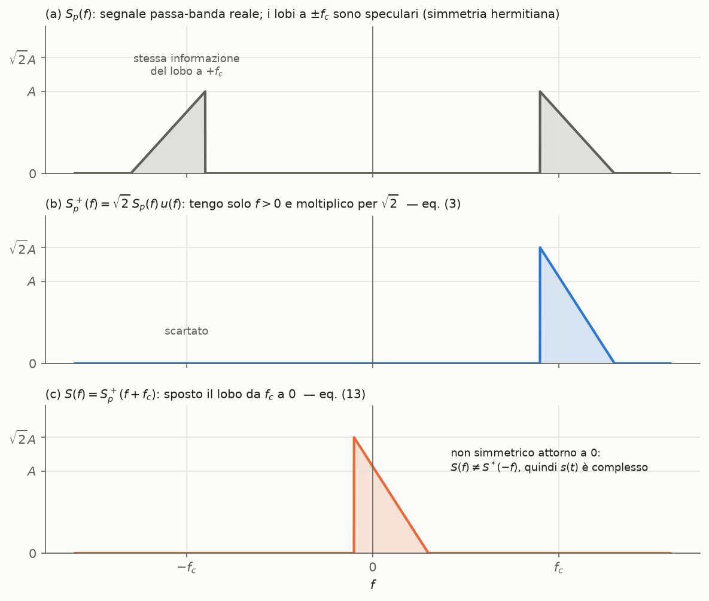
🧩 Grafico mio (eq. (3) e (13) e; script in output/grafici/). La catena in tre passi, con un lobo asimmetrico come quello.
- (a) Lo spettro reale del segnale passa-banda: i lobi a \pm f_c sono speculari, quindi portano la stessa informazione.
- (b) Il segnale analitico: si butta il lobo negativo e si moltiplica per \sqrt2.
- (c) L'inviluppo complesso: lo stesso lobo spostato in 0.
Il lobo in (c) non è simmetrico attorno a 0. Non vale S(f) = S^\ast (-f), e per questo s(t) è complesso: è la nota a mano, «il ricevitore porta in banda base, e questo rende il segnale complesso».
Componenti I/Q nel tempo
con le note a mano:
- la (15) corrisponde a una traslazione del segnale analitico, per la proprietà di Fourier;
- s_c è la componente in fase (I), s_s quella in quadratura (Q); quadratura vuol dire prodotto scalare nullo con s_c;
- i passaggi s_p^+ = s\,e^{j2\pi f_c t} = [s_c + js_s]\,e^{j2\pi f_c t} che portano alla (16)–(17), "in termini di seno e coseno".
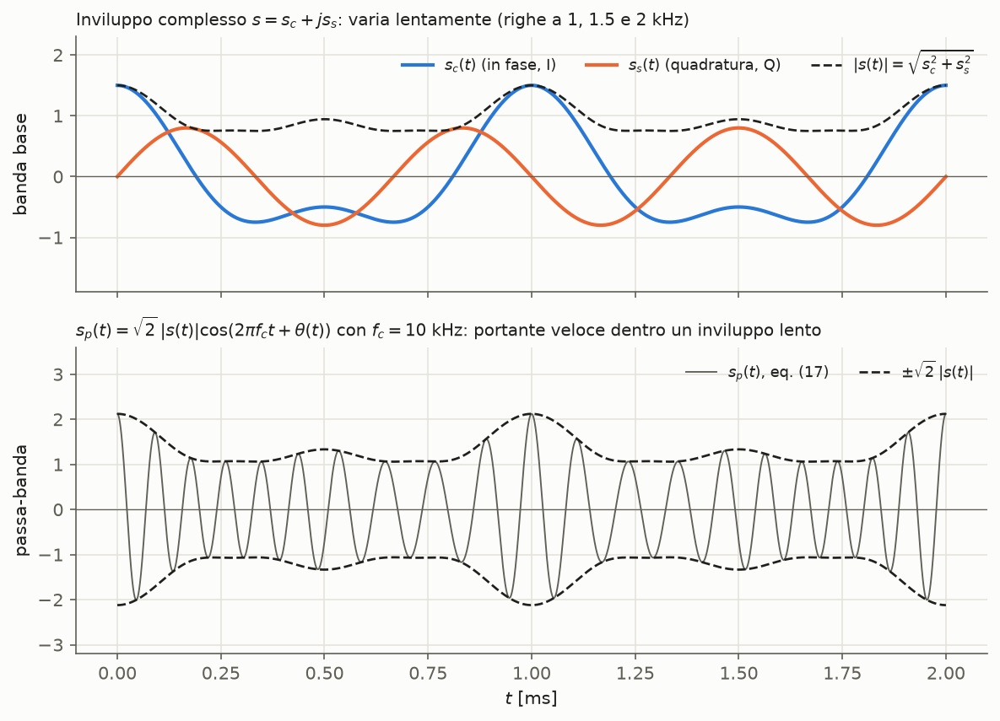
🧩 Grafico mio (eq. (17)). Esempio con s_c(t) = \cos(2\pi\cdot 1\,\text{kHz}\cdot t) + 0.5\cos(2\pi\cdot 2\,\text{kHz}\cdot t) e s_s(t) = 0.8\sin(2\pi\cdot 1.5\,\text{kHz}\cdot t). In alto I, Q e il modulo |s(t)|, che variano lentamente. In basso s_p(t) con f_c = 10 kHz: una portante veloce dentro l'inviluppo \pm\sqrt2\,|s(t)|, come prevede la forma ampiezza-fase. f_c è scelta piccola per rendere visibili le oscillazioni; nei sistemi reali f_c/B è molto più grande.
Cosa rappresenta l'inviluppo:
- ricavare l'inviluppo complesso significa estrarre le variazioni lente di ampiezza e fase introdotte dalla modulazione in banda base, eliminando la variazione di fase rapida e prevedibile dovuta a f_c. Nota a mano: «l'inviluppo complesso ci permette di separare le variazioni lente introdotte dalla modulazione in banda base»;
- la fase dovuta a f_c è prevedibile, quindi non porta informazione;
- l'informazione di un segnale passa-banda è tutta nel suo inviluppo complesso.
Energia
📄 Fonte:, appunti a mano e
- Le forme d'onda passa-banda di I e di Q, x_c = \sqrt2 s_c\cos(2\pi f_c t) e x_s = \sqrt2 s_s\sin(2\pi f_c t), sono ortogonali, eq. (18). La slide rimanda al libro per la dimostrazione, che è negli appunti (derivazione della (18) qui sopra).
- Per due segnali passa-banda reali il prodotto scalare è la parte reale del prodotto scalare degli inviluppi, eq. (19). Verifica negli appunti.
- Con u = v = s: l'energia dell'inviluppo complesso è uguale a quella del segnale passa-banda, eq. (20), anch'essa negli appunti.
Banda di un segnale complesso
- L'occupazione spettrale di un segnale fisico reale è la più piccola banda di frequenze positive che contiene la maggior parte del segnale. Per un segnale reale vale S(f) = S^\ast (-f), quindi le frequenze negative non aggiungono nulla.
- Nei segnali complessi in banda base l'informazione sta sia nelle frequenze positive sia in quelle negative.
- L'occupazione spettrale di un segnale complesso in banda base è quindi la più piccola banda attorno all'origine che contiene la maggior parte del segnale, contando frequenze positive e negative.
🧩 Esempio mio: un segnale passa-banda con banda monolatera B e f_c al centro del lobo ha l'inviluppo in (-B/2,\ B/2). Contando i due lati, l'occupazione è B: la stessa larghezza del lobo positivo di s_p. Non va dimezzata né raddoppiata, perché le due metà dello spettro di s(t) sono diverse (grafico (c) sopra).
🎯 Esame: definire l'inviluppo complesso, (13) e (15), e le componenti I/Q; ricavare la (17) e la (14); dimostrare l'ortogonalità (18) e la conservazione dell'energia (20); spiegare perché l'informazione sta tutta nell'inviluppo e perché conviene lavorare in banda base.
Perché importa
È il concetto centrale del primo tema del corso. Permette di:
- descrivere qualunque segnale passa-banda con un segnale in banda base, senza portarsi dietro f_c;
- campionarlo ed elaborarlo in digitale a frequenza bassa;
- progettare modulazione, sincronizzazione e demodulazione indipendentemente dalla banda fisica.
Dimostrazioni passo-passo
Derivazione — Eq. (15): l'inviluppo nel tempo
Moltiplicare per e^{-j2\pi f_c t} sposta tutto lo spettro di -f_c: il lobo che il segnale analitico ha attorno a +f_c finisce attorno a 0.
Derivazione — Eq. (16) e (17): dall'inviluppo al segnale passa-banda
Il secondo passaggio è annotato a mano sulla slide: «abbiamo definito prima l'inviluppo come s(t) = s_p^+(t)e^{-j2\pi f_c t}, quindi s_p^+(t) = s(t)e^{j2\pi f_c t} = [s_c(t) + js_s(t)]\,e^{j2\pi f_c t}». Sotto la (17): «in termini di seno e coseno». Da qui i nomi: s_c moltiplica il coseno della portante, s_s il seno. Seno e coseno sono sfasati di 90°, "in quadratura". Ipotesi: nessuna oltre alla definizione. La slide sottolinea che la (17) vale per qualunque segnale passa-banda.
Derivazione — Eq. (14): dall'inviluppo al passa-banda in frequenza
🧩 Derivazione mia
Lettura: il primo termine ricostruisce il lobo attorno a +f_c, il secondo quello attorno a -f_c come specchio coniugato. Il segnale che si ottiene è reale, perché il suo spettro è hermitiano per costruzione. Note a mano sulla (14): è la «relazione inversa», e il termine S^\ast (-f - f_c) rimette la «parte tagliata da u(f)», cioè il lobo negativo scartato costruendo il segnale analitico. Sanity check: per f vicino a +f_c il secondo termine è nullo e, dalla (13), S(f - f_c) = \sqrt2\,S_p(f). Quindi S_p(f) = \sqrt2\,S_p(f)/\sqrt2 ✓.
Derivazione — Forma ampiezza-fase
🧩 Derivazione mia: rende esplicita la frase della slide.
s_p(t) è quindi una portante a f_c con ampiezza \sqrt2\,a(t) e fase \theta(t). Se s(t) ha banda molto minore di f_c (banda stretta), ampiezza e fase cambiano lentamente rispetto alla portante.
Derivazione — Eq. (18): ortogonalità delle componenti I e Q
📄 La struttura della dimostrazione è quella degli appunti: Parseval, spettri di x_c e x_s, termini incrociati nulli per la banda stretta, cambio di variabile. 🧩 Esplicito io i fattori e l'ipotesi minima. S_c e S_s sono le trasformate di s_c e s_s, e W la loro banda.
Appunti a mano.
- In alto: la dimostrazione di \langle x_c, x_s\rangle = 0 con Parseval. Si sviluppa il prodotto; i due termini incrociati sono barrati, con la nota in rosso sulla banda stretta; dopo il cambio di variabile i due integrali restanti si cancellano.
- In basso: la verifica della (19), con i termini misti che si annullano per l'ortogonalità e i termini in \cos(4\pi f_c t) che valgono circa 0.
Sviluppando il prodotto escono quattro termini:
- S_c(f - f_c)\,S_s^\ast (f + f_c) e S_c(f + f_c)\,S_s^\ast (f - f_c) sono nulli. Il primo fattore vive attorno a \pm f_c, il secondo attorno a \mp f_c, e le due zone non si sovrappongono. Negli appunti la giustificazione è in rosso: «per ipotesi i segnali sono a banda stretta: lo spettro centrato a +f_c non si sovrappone mai a quello centrato in -f_c, perché B/f_c \ll 1».
- Restano gli altri due, con il cambio di variabile \nu = f \mp f_c:
\langle x_c, x_s\rangle = \frac{1}{2j}\Big[\underbrace{\int S_c(f + f_c)\,S_s^*(f + f_c)\,df}_{=\int S_c(\nu) S_s^*(\nu)\,d\nu} - \underbrace{\int S_c(f - f_c)\,S_s^*(f - f_c)\,df}_{=\int S_c(\nu) S_s^*(\nu)\,d\nu}\Big] = 0
Ipotesi: gli appunti usano la banda stretta, B/f_c \ll 1. 🧩 In realtà basta di meno: che s_c e s_s abbiano banda W < f_c. Per un segnale passa-banda questo è sempre garantito: dalla (2) e dalla (13), con f_c al centro del lobo, S(f) \approx 0 per |f| > B/2. Quindi W = B/2 < f_c, perché f_c > B. Alternativa nel tempo (🧩 mia):
⚠️ Segni negli appunti: gli appunti scrivono X_s = -\frac{\sqrt2}{2j}S_s(f) \ast [\delta(f - f_c) - \delta(f + f_c)], con un meno davanti che non ci va, perché \sqrt2\sin\alpha = \frac{\sqrt2}{2j}(e^{j\alpha} - e^{-j\alpha}). Anche l'ordine dei due integrali finali è invertito rispetto allo sviluppo. Il risultato, \frac{1}{2j}\big[\int S_c S_s^\ast - \int S_c S_s^\ast \big] = 0, non cambia: è la differenza di due integrali uguali.
Nota a mano: «quadratura indica che il prodotto ortogonale [scalare] con s_c è 0». È proprio questa proprietà.
Derivazione — Eq. (19): prodotto scalare tra segnali passa-banda
📄 Gli appunti procedono così: sviluppano \langle u_p, v_p\rangle con la (17); i termini misti si annullano perché le componenti in fase e in quadratura sono ortogonali; restano 2\int u_cv_c\cos^2 e 2\int u_sv_s\sin^2, che si scrivono con \cos^2 = \frac{1 + \cos(4\pi f_ct)}{2} e \sin^2 = \frac{1 - \cos(4\pi f_ct)}{2}. I due integrali con \cos(4\pi f_c t) valgono circa 0, perché «le aree positive vengono bilanciate da quelle negative, poiché B/f_c \ll 1». Resta \text{Re}\{\int[u_c + ju_s][v_c - jv_s]\,dt\} = \text{Re}\{\langle u, v\rangle\}. 🧩 Qui sotto lo stesso conto per esteso. u_p, v_p sono reali passa-banda, con inviluppi u = u_c + ju_s e v = v_c + jv_s; \alpha = 2\pi f_c t.
I termini a 2f_c si annullano. Gli appunti lo giustificano con le aree che si bilanciano, cioè un inviluppo lento moltiplicato per un coseno veloce, e scrivono "≈ 0".
🧩 Precisazione mia: se la banda è minore di f_c l'integrale è esattamente 0. Infatti \int g(t)\cos(4\pi f_c t)\,dt = \frac12[G(2f_c) + G(-2f_c)], e allo stesso modo per il seno. G è la trasformata di un prodotto di due segnali con banda \le W, quindi ha banda \le 2W < 2f_c e vale zero in \pm 2f_c.
Poi il confronto con l'inviluppo complesso:
Derivazione — Eq. (20): l'energia si conserva
In componenti: \|s_p\|^2 = \|s_c\|^2 + \|s_s\|^2, cioè l'energia di I più quella di Q.
⚠️ Nelle note a mano:
- il secondo passaggio è indicato come «proprietà (10)», ma usa la (19);
- in alto c'è scritto s_p(t) = x_c(t) + x_s(t) = \sqrt2 s_c\cos(2\pi f_c t) + \sqrt2 s_s\sin(2\pi f_c t), ma dalla (17) è s_p = x_c - x_s, con il meno davanti al termine in seno. Per l'ortogonalità il segno non conta, per l'uguaglianza con s_p sì.
Appunti a mano: conclusione della verifica della (19), \text{Re}\{\int[u_c + ju_s][v_c - jv_s]\,dt\} = \text{Re}\{\langle u, v\rangle\}, con u inviluppo complesso di u_p e v^\ast il coniugato di v. Sotto, la (20): \langle s_p, s_p\rangle = \int s_p^2\,dt = \|s_p\|^2 = \text{Re}\{\langle s, s\rangle\} = \text{Re}\{\int|s|^2dt\} = \|s\|^2, dove l'integrale è reale e quindi si può togliere Re. Perché torna esatto: è l'effetto del \sqrt2 nella (3), vedi segnale analitico (sezione «Derivazione — Perché proprio √2»). Nota a mano: alla domanda se tutti i passaggi conservano l'energia, la risposta è «sì, per le accortezze fatte (\sqrt2)».
Derivazione — Frequenza di campionamento: passa-banda contro inviluppo
🧩 Derivazione mia, con il teorema del campionamento (teorema del campionamento). ⚠️ Notazione: nella lezione sul campionamento f_c era la frequenza di campionamento; qui f_c è la portante, quindi la frequenza di campionamento si chiama f_s.
Ogni campione dell'inviluppo è complesso, cioè due numeri reali. Anche contando 2B numeri reali al secondo, il rapporto resta dell'ordine di f_c/B. Ipotesi: f_c al centro del lobo; campionamento ideale. Per s(t) la condizione nasce dallo stesso argomento delle repliche, applicato a uno spettro non simmetrico.
Upconversion e downconversion
Spiegazione
Gli schemi a blocchi
- Upconversion (da banda base a banda passante): s_c(t) moltiplicato per \sqrt2\cos 2\pi f_c t, s_s(t) moltiplicato per -\sqrt2\sin 2\pi f_c t; la somma dei due dà s_p(t).
- Downconversion (da banda passante a banda base): s_p(t) entra in due rami; uno lo moltiplica per \sqrt2\cos 2\pi f_c t e lo filtra passa-basso ottenendo s_c(t), l'altro lo moltiplica per -\sqrt2\sin 2\pi f_c t e lo filtra ottenendo s_s(t).
- Note a mano: a sinistra S → s(n) → MOD, che produce le due componenti s_c(t) e s_s(t) in ingresso all'upconverter. Sopra il modulatore: «esce l'inviluppo». Sotto la (21), i due termini a 2f_c sono sottolineati con «tagliati dal filtro».
💡 Connessione: «esce l'inviluppo» vuol dire che il modulatore di questo disegno è la sola parte in banda base. Nelle note il macroblocco "modulatore" comprende anche l'upconversion: il nome MOD qui indica solo il primo dei due passi (modulazione digitale).
L'upconversion nel tempo: cosa produce ogni ramo
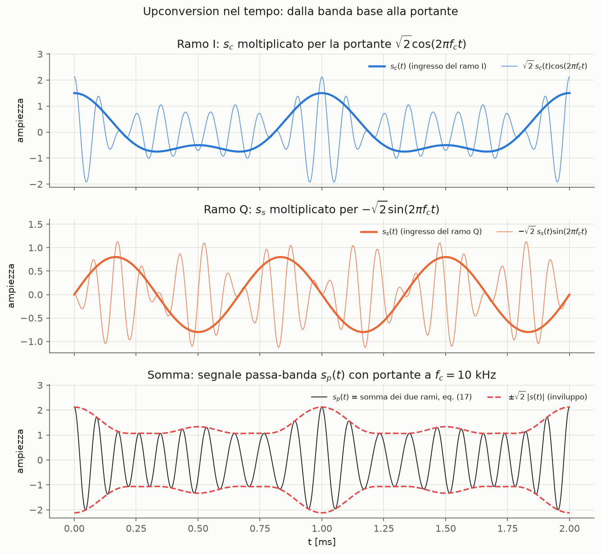
🧩 Grafico mio dell'eq. (17). Esempio: f_c = 10 kHz, s_c(t) = \cos(2\pi\,1\,\text{kHz}\,t) + 0.5\cos(2\pi\,2\,\text{kHz}\,t) (blu), s_s(t) = 0.8\sin(2\pi\,1.5\,\text{kHz}\,t) (arancio). Tempo in ms, due periodi della banda base.
- In alto, ramo I: la curva spessa è s_c(t); moltiplicata per \sqrt{2}\cos(2\pi f_c t) diventa una portante a 10 kHz la cui ampiezza segue s_c (curva sottile). Dove s_c è negativo la portante è capovolta.
- Al centro, ramo Q: lo stesso con s_s(t) e la portante in quadratura -\sqrt{2}\sin(2\pi f_c t).
- In basso, la somma dei due rami è s_p(t), un unico segnale reale. Il suo inviluppo (tratteggio rosso) è \pm\sqrt{2}\,|s(t)|, con |s| = \sqrt{s_c^2 + s_s^2}: a t = 0 vale \sqrt{2}\cdot 1.5 = 2.12, perché s_s(0) = 0.
La portante ha periodo 0.1 ms, cioè 20 oscillazioni nel grafico, mentre l'inviluppo cambia in frazioni di ms: è la separazione "lento contro veloce". Qui f_c è bassa solo per rendere visibili le oscillazioni.
La downconversion nel tempo: perché serve il passa-basso
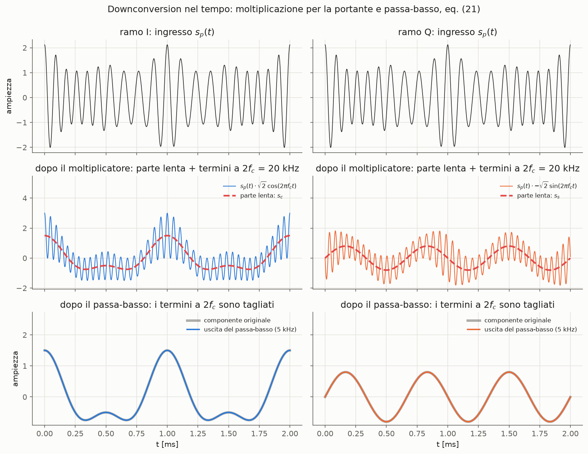
🧩 Grafico mio dell'eq. (21), stesso esempio. A sinistra il ramo I, a destra il ramo Q.
- In alto: l'ingresso s_p(t), lo stesso segnale passa-banda dell'upconversion.
- Al centro: dopo il moltiplicatore (blu per il ramo I, arancio per il Q) il segnale è la parte lenta (tratteggio rosso, s_c o s_s) più oscillazioni a 2f_c = 20 kHz che la attraversano. Sono i termini s_c\cos(4\pi f_c t) - s_s\sin(4\pi f_c t) della (21), e per il ramo Q i termini -s_s\cos(4\pi f_c t) - s_c\sin(4\pi f_c t).
- In basso: il passa-basso (taglio a 5 kHz, tra la banda 2 kHz e i 18 kHz in cui iniziano i termini a 2f_c) toglie le oscillazioni veloci e restituisce s_c e s_s. L'uscita (colore) si sovrappone alla componente originale (grigio), con scarto sotto 10^{-6} nella verifica numerica.
🧩 Si vede anche perché la componente Q non disturba il ramo I: nel ramo I compare nel solo termine a 2f_c, che il filtro elimina, e non nella parte lenta.
Upconversion e downconversion in frequenza
🧩 Grafico mio, con f_c = 6 kHz per avere le copie più vicine e leggibili. Per disegnare, S(f) è preso reale e asimmetrico (picco a 0.5 kHz, supporto da −1 a 2 kHz): quindi S(f) \ne S^\ast (-f) e s(t) è comunque complesso. Le ampiezze sono in unità del picco di S.
- Primo pannello: l'inviluppo complesso S(f) in banda base, altezza 1.
- Upconversion (eq. (14)): S_p(f) = [S(f - f_c) + S^{\ast}(-f - f_c)]/\sqrt{2}. Il lobo si sposta a +f_c e la sua copia coniugata e specchiata a -f_c, entrambi alti 1/\sqrt{2}.
- Downconversion, ramo I: moltiplicare per \sqrt{2}\cos(2\pi f_c t) vuol dire sommare S_p traslato di \pm f_c, con un fattore 1/\sqrt{2}. Si ottengono tre copie: due a \pm 2f_c, di altezza 1/2, e una in banda base, [S(f) + S^{\ast}(-f)]/2. Quest'ultima è la somma di due lobi e qui ha altezza circa 0.67, non 1/2. Il riquadro tratteggiato è il passa-basso.
- Dopo il passa-basso resta la sola copia in banda base: [S(f) + S^{\ast}(-f)]/2 è la trasformata di \text{Re}\{s(t)\} = s_c(t).
🧩 Derivazione mia: per il ramo Q si ragiona allo stesso modo con -\sqrt{2}\sin(2\pi f_c t) = -\frac{\sqrt{2}}{2j}(e^{j2\pi f_c t} - e^{-j2\pi f_c t}), e la copia in banda base è [S(f) - S^{\ast}(-f)]/(2j), la trasformata di \text{Im}\{s(t)\} = s_s(t). È la versione in frequenza di "parte reale e parte immaginaria dell'inviluppo".
La downconversion passo per passo (animazione)
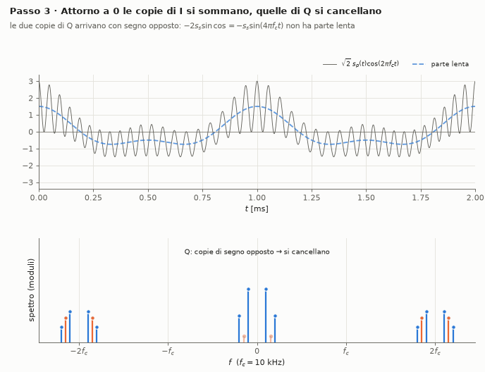
🧩 Animazione mia della (21). Stesso esempio del grafico I/Q in inviluppo complesso: I con righe a 1 e 2 kHz (blu), Q con una riga a 1.5 kHz (arancio), f_c = 10 kHz.
- Il segnale passa-banda ha le righe di I e di Q attorno a \pm f_c.
- Moltiplicare per \sqrt2\cos(2\pi f_c t) sdoppia ogni riga: una copia va verso 0, l'altra verso \pm 2f_c.
- Attorno a 0 le due copie di I si sommano, quelle di Q hanno segno opposto e si cancellano.
- Il passa-basso elimina le copie a \pm 2f_c.
- Esce s_c(t), identico a quello di partenza.
Le ampiezze delle righe sono controllate con la FFT nello script: 0.5 e 0.25 in banda base, nessuna riga a 1.5 kHz.
Tutta la catena come un unico canale
Appunti a mano: S → MOD → upconverter → canale fisico → downconverter → DEMOD → utente. I tre blocchi centrali, cerchiati, sono «modellati come un unico canale». A destra la domanda «con tutti i passaggi che abbiamo fatto si conserva l'energia?» e la risposta «sì, per le accortezze fatte (\sqrt2)».
- Modulatore e demodulatore lavorano in banda base. Tutto quello che sta in mezzo (upconverter, canale fisico, downconverter) si può vedere come un solo canale equivalente in banda base. Come si descrive il filtraggio del canale in banda base è in equivalente banda base dei filtri.
- L'energia si conserva lungo la catena grazie ai fattori \sqrt2: eq. (20) e derivazione del \sqrt2 qui sopra.
Cosa si recupera davvero
La downconversion estrae le variazioni lente di ampiezza e fase dovute alla modulazione, e toglie la variazione di fase rapida e prevedibile dovuta a f_c. Quella variazione non porta informazione, quindi l'inviluppo complesso contiene tutta l'informazione del segnale passa-banda. Nota a mano in testa alla slide: «l'inviluppo complesso ci permette di separare le variazioni lente introdotte dalla modulazione in banda base». Sulla slide sono evidenziati «eliminating» e f_c: la parte eliminata è proprio quella legata alla portante. Dettagli e grafico in inviluppo complesso.
🎯 Esame: disegnare gli schemi di upconversion e downconversion; ricavare la (21) e il ramo Q; spiegare perché serve il passa-basso e che banda deve avere; spiegare perché Q non "sporca" il ramo I.
Perché importa
Nello schema modulare del transceiver upconversion e downconversion sono gli unici passi che toccano il segnale passa-banda. Tutto il resto lo fa il DSP sull'inviluppo in banda base: codifica, modulazione e filtraggio in trasmissione; sincronizzazione, demodulazione e decodifica in ricezione. Upconverter e downconverter sono quindi l'interfaccia tra il mondo in banda base del DSP e il canale fisico passa-banda. La slide aggiunge che così i transceiver elaborano in digitale direttamente l'inviluppo, «riducendo al minimo la parte di elaborazione analogica» (nota a mano).
Slide con le note a mano: le parentesi graffe raggruppano i quattro passi in modulatore e demodulatore.
Le note a mano raggruppano i passi in due macroblocchi:
- modulatore = DSP di trasmissione + upconversion;
- demodulatore = downconversion + DSP di ricezione.
Grazie a questa separazione gli algoritmi si sviluppano in banda base, indipendentemente dalla banda fisica usata. Nota a mano: «quindi ci si è svincolati dalla frequenza carrier (f_c)».
🧩 Conseguenza pratica (mia): f_c compare solo nelle portanti \sqrt2\cos(2\pi f_c t) e -\sqrt2\sin(2\pi f_c t) dei due convertitori. Per trasmettere su un'altra banda basta cambiare quelle; il DSP resta identico.
Dimostrazioni passo-passo
Derivazione — Eq. (21): ramo I della downconversion
Lettura: il primo termine è s_c(t), in banda base. Gli altri due sono s_c e s_s riportati attorno a 2f_c. La nota a mano sulla slide li sottolinea con «tagliati dal filtro»: è il passa-basso a eliminarli. La componente Q compare solo attorno a 2f_c: il prodotto \sin\alpha\cos\alpha non ha parte lenta.
Derivazione — Ramo Q della downconversion
🧩 Derivazione mia
Dopo il passa-basso resta s_s(t). Il segno meno davanti a \sqrt2\sin compensa il meno della (17).
Derivazione — Requisito sul filtro passa-basso
🧩 Derivazione mia. W = banda di s_c e s_s (per un segnale passa-banda W = B/2, vedi inviluppo complesso).
- Il termine utile s_c(t) occupa |f| < W.
- I termini s_c\cos(4\pi f_c t) e s_s\sin(4\pi f_c t) occupano |f \mp 2f_c| < W, cioè da 2f_c - W in su.
- Un passa-basso con frequenza di taglio f_{LP} li separa se
W \le f_{LP} \le 2f_c - W
- L'intervallo esiste se W \le 2f_c - W, cioè W \le f_c: sempre vero per un segnale passa-banda, perché W = B/2 < f_c. Con la banda stretta (B \ll f_c) i termini a 2f_c sono lontanissimi e il filtro è facile da realizzare.
🧩 Grafico mio, con f_c = 10 kHz e W = 2 kHz (i valori dell'esempio nel tempo). Spettro dopo il moltiplicatore: in blu la banda utile |f| < W, in arancio le due copie a \pm 2f_c, che occupano |f \mp 2f_c| < W, cioè da 2f_c - W = 18 kHz a 22 kHz. Il riquadro tratteggiato è la risposta del passa-basso, con taglio f_{LP}. Le altezze sono solo indicative.
- (a) Con f_{LP} = 5 kHz il filtro contiene tutta la banda utile e nessuna copia: è la scelta giusta. La freccia verde mostra l'intero intervallo ammesso, da W a 2f_c - W, cioè qui da 2 a 18 kHz.
- (b) Con f_{LP} = 1 kHz < W il taglio cade dentro la banda utile: le parti tratteggiate in rosso, tra 1 e 2 kHz, sono perse e s_c esce deformato.
- (c) Con f_{LP} = 19 kHz > 2f_c - W il filtro lascia passare l'inizio delle copie a \pm 2f_c, tra 18 e 19 kHz: il segnale in uscita porta con sé un residuo della portante.
Le due condizioni sono i due lati dell'intervallo. Il lato inferiore, f_{LP} \geq W, protegge il segnale utile. Il lato superiore, f_{LP} \leq 2f_c - W, elimina le copie. L'intervallo è lungo 2f_c - 2W: più la portante è alta rispetto alla banda, più c'è margine per realizzare un filtro non ideale, con una fascia di transizione.
Derivazione — Perché il √2 nei moltiplicatori
🧩 Derivazione mia
Il guadagno complessivo del ramo I, dal trasmettitore all'uscita del filtro, è
Derivazione — I due rami sono una sola moltiplicazione complessa
🧩 Derivazione mia: collega lo schema a due rami alla (15).
La downconversion è quindi "moltiplica per \sqrt2\,e^{-j2\pi f_c t} e filtra". Corrisponde alla (15), che trasla lo spettro di -f_c. Il filtro qui serve a eliminare le repliche a \pm 2f_c, che la (15) non genera perché parte dal segnale analitico, privo delle frequenze negative.
Equivalente in banda base di un filtro passa-banda
Spiegazione
Passa-banda e banda base a confronto
A sinistra, in banda passante: filtro H_p(f), rettangoli di altezza A attorno a \pm f_c; ingresso S_p(f), triangoli di altezza B; uscita Y_p(f), il triangolo "tagliato" dal rettangolo, altezza AB. A destra, in banda base complessa, gli stessi spettri attorno a 0 con un solo lobo: filtro H(f) di altezza \sqrt2 A, ingresso S(f) di altezza \sqrt2 B, uscita Y(f) di altezza \sqrt2 AB.
Realizzazione con operazioni reali
- Il segnale passa-banda s_p(t) entra nel downconverter, che produce s_c(t) e s_s(t).
- Il riquadro tratteggiato, "operazioni reali in banda base", contiene quattro filtri reali: s_c passa per h_c e h_s, s_s per h_c e h_s. Due sommatori formano y_c = s_c \ast h_c - s_s \ast h_s (con il segno meno) e y_s = s_s \ast h_c + s_c \ast h_s.
- A mano, sotto: la catena delle (24)–(25) riportata nella derivazione sopra.
- A mano, a destra: le due uscite confluiscono in un sommatore che forma y(t), «segnale in banda base». y(t) va a un DSP «che lavora in banda base».
⚠️ Nella figura manca il fattore 1/\sqrt2 delle (24)–(25): le uscite disegnate sono \sqrt2\,y_c e \sqrt2\,y_s. La nota a mano sotto lo schema invece il 1/\sqrt2 ce l'ha.
🧩 Il sommatore disegnato a mano va letto come y = y_c + j\,y_s: la componente Q entra moltiplicata per j, non sommata così com'è. Nel DSP le due componenti viaggiano come parte reale e parte immaginaria di un unico numero complesso.
🧩 Quando i termini incrociati spariscono (osservazione mia): se h(t) è reale, cioè h_s = 0, le (24)–(25) diventano y_c = \frac{1}{\sqrt2}\,s_c \ast h_c e y_s = \frac{1}{\sqrt2}\,s_s \ast h_c. I e Q vengono filtrati separatamente, senza mescolarsi. Per la simmetria hermitiana (segnali banda base e passa banda), h è reale quando H(f) = H^\ast (-f), cioè quando il filtro passa-banda è simmetrico (coniugato) attorno a f_c. Nella figura il rettangolo H(f) non è centrato in 0: in quel caso h_s \neq 0 e i termini incrociati ci sono.
A cosa serve
Gli appunti vedono upconverter, canale fisico e downconverter come un unico canale (upconversion e downconversion). Questa pagina dice come descriverlo: se il canale fisico è un filtro LTI passa-banda h_p, visto dalla banda base è il filtro h/\sqrt2 che agisce sull'inviluppo. Tutto si può quindi simulare e trattare in banda base. La nota a mano chiude il cerchio: l'uscita y(t) è un segnale in banda base e va al DSP del ricevitore, che lavora in banda base.
🎯 Esame: ricavare la (22) partendo dai segnali analitici; spiegare il fattore 1/\sqrt2; scrivere le (24)–(25) e disegnare lo schema con quattro filtri reali.
Perché importa
Completa la rappresentazione in banda base. Non solo i segnali, ma anche i sistemi passa-banda (filtri, canali LTI) hanno un equivalente in banda base. Si può allora lavorare interamente con gli inviluppi, dal modulatore al demodulatore, senza mai tornare a f_c.
Dimostrazioni passo-passo
Derivazione — Eq. (22)
📄 La catena è quella degli appunti. Lì l'ingresso si chiama x_p(t) (inviluppo x(t)); qui uso s come nella slide. Tra virgolette le note a mano; gli altri commenti sono 🧩 miei.
Gli appunti partono da y_p(t) = x_p(t) \ast h_p(t) e dalla domanda «l'uscita come diventa in termini di inviluppo complesso?». La risposta: «ragioniamo in f». Nel tempo c'è una convoluzione; in frequenza diventa un prodotto, Y_p(f) = X_p(f)\,H_p(f), molto più facile da maneggiare. Servono poi i tre segnali analitici, scritti uno sotto l'altro negli appunti:
Il perché dei due trucchi:
- u \to u^2. Il gradino vale solo 0 o 1, e 0^2 = 0, 1^2 = 1: elevarlo al quadrato non cambia nulla. Serve ad avere due gradini, uno da assegnare a S_p e uno a H_p. Così ciascuno dei due fattori diventa il segnale analitico del suo segnale.
- \cdot\sqrt2/\sqrt2. Anche questo non cambia il valore (moltiplica per 1). Nella riga c'è un solo \sqrt2, ma per ricostruire due inviluppi ne servono due, uno per fattore. Moltiplicando e dividendo per \sqrt2 al numeratore ce ne sono due, \sqrt2\cdot\sqrt2, e al denominatore resta un \sqrt2: è il \frac{1}{\sqrt2} che «resta fuori».
Da dove viene il 1/\sqrt2: ogni inviluppo porta con sé un \sqrt2 (definizione (3)). Nel prodotto SH i fattori \sqrt2 sono due, mentre Y, che è un solo inviluppo, ne deve avere uno solo. Il 1/\sqrt2 toglie quello in più.
Sanity check (🧩): controllo sulle altezze della figura, più sotto: torna \sqrt2 AB ✓.
Appunti a mano.
- A sinistra, due schemi: in alto il sistema reale, x_p(t) → LTI con h_p(t) → y_p(t); sotto lo stesso sistema visto sugli inviluppi, x(t) → LTI con h(t) → y(t).
- A destra la catena della (22), come sopra, con le tre note in verde e azzurro: «sostituisco l'uscita», «non altera nulla» su u^2, «resta fuori» sotto \frac{1}{\sqrt2}.
- In fondo la conclusione: l'inviluppo complesso di y_p(t) nel dominio della frequenza è Y(f) = \frac{1}{\sqrt2}X(f)H(f), «che si traduce nel dominio del tempo» in y(t) = \frac{1}{\sqrt2}\,x(t) \ast h(t).
Derivazione — Eq. (23)
Derivazione — Eq. (24) e (25): le componenti I e Q dell'uscita
📄 La catena è scritta a mano sotto lo schema (prima riga, penultima e ultima). La riga intermedia con i quattro termini e i commenti a destra sono 🧩 miei.
Servono quattro convoluzioni reali. È la stessa regola del prodotto di due numeri complessi, (a + jb)(c + jd) = (ac - bd) + j(bc + ad), con la convoluzione al posto del prodotto.
🧩 Perché si può sviluppare come un prodotto: la convoluzione è lineare in ciascuno dei due argomenti, (a + b) \ast c = a \ast c + b \ast c e (\alpha a) \ast c = \alpha\,(a \ast c) anche per \alpha = j. I segnali s_c, s_s, h_c, h_s sono reali, quindi ogni convoluzione s_\cdot \ast h_\cdot è reale e la separazione tra parte reale e immaginaria è quella scritta.
Derivazione — Controllo sulle altezze della figura
🧩 Verifica mia. In figura A è l'altezza del filtro e B quella dello spettro d'ingresso (non la banda).
Coincide con il \sqrt2 AB della figura, ed è anche l'inviluppo di Y_p calcolato direttamente con la (13): \sqrt2\cdot AB ✓.
Domande da esame
- Definire segnali e canali in banda base e in banda passante. Cos'è la banda monolatera e perché per un segnale reale la bilatera è il doppio? Cos'è un segnale a banda stretta?
- Definire il segnale analitico e ricavarne l'espressione nel tempo con la trasformata di Hilbert. Perché c'è \sqrt2? Perché la corrispondenza con s_p è biunivoca?
- Definire l'inviluppo complesso e le componenti I/Q. Ricavare s_p = \sqrt2 s_c\cos - \sqrt2 s_s\sin e S_p(f) in funzione di S(f).
- Dimostrare che l'energia dell'inviluppo è uguale a quella del segnale passa-banda.
- Disegnare e spiegare upconversion e downconversion. Perché serve il passa-basso?
- Ricavare l'equivalente in banda base di un filtro passa-banda e la sua realizzazione con filtri reali.
- Perché conviene elaborare i segnali in banda base?